Nutrition & Feeding · Mineral Nutrition for Cattle & Buffaloes
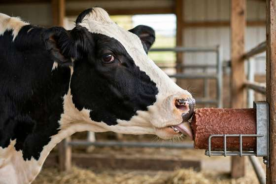
A mineral lick block — the simplest way to offer minerals free-choice
Minerals are essential nutrients that cattle cannot make themselves — every gram must come from feed, fodder, water or supplements. Although minerals make up only a small part of the diet, they control bone growth, milk production, fertility, immunity, muscle and nerve function, and the health of skin, coat and hooves.
Mineral deficiency is one of the most common — and most overlooked — causes of low milk yield, poor fertility and weak calves on dairy farms. This guide explains the macro and trace minerals cattle need, what each one does, the signs of deficiency, the risks of excess, how minerals interact with each other, and practical supplementation for Pakistani dairy farms.
Introduction: Why Minerals Matter
A dairy cow producing 20 litres of milk a day loses large amounts of calcium, phosphorus, potassium and other minerals in her milk every single day. If the diet does not replace them, she draws on her own bones and body reserves — and when those run out, production falls, fertility fails and disease follows.
Minerals fall into two groups:
Macro minerals — needed in relatively large amounts: calcium, phosphorus, magnesium, sodium, potassium and sulphur.
Trace minerals — needed in very small amounts, but just as essential: zinc, copper, manganese, selenium, cobalt, iodine and iron.
Green fodder, dry fodder and concentrates all contain minerals, but the amounts vary with the soil, the crop, the season and the stage of growth. Wheat straw and dry roughages — the base of many Pakistani rations — are particularly low in minerals, which is why supplementation is almost always necessary.
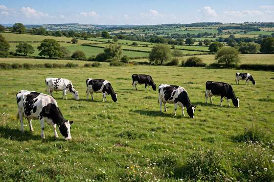
Green pasture supplies minerals — but the amounts depend on the soil and season
Macro Minerals
Macro minerals are required in grams per day. The table below summarises their main functions and the classic signs of deficiency.
Mineral
Main function
Key deficiency signs
Calcium (Ca)
Bones and teeth, milk, muscle contraction, nerve function, blood clotting
Milk fever around calving, weak bones, poor milk yield
Phosphorus (P)
Bones and teeth, energy metabolism, fertility, appetite
Grass tetany — tremors, twitching, collapse on lush pasture
Sodium (Na)
Fluid balance, nerve signals, appetite, milk production
Salt craving, licking, poor appetite, low milk yield
Potassium (K)
Fluid balance, muscle function, acid-base balance
Weakness, poor growth, reduced feed intake (rare on forage diets)
Sulphur (S)
Amino acids, vitamins, rumen microbial protein synthesis
Poor growth, poor feed use, dull coat
Ca
Calcium — the milk mineralAbout 99% of body calcium is in bones and teeth. A high-yielding cow needs far more calcium at calving than at any other time, and a sudden fall in blood calcium causes milk fever. Keep the calcium-to-phosphorus ratio in the diet at roughly 2:1.
P
Phosphorus — energy and fertilityPhosphorus works with calcium in bone, and is part of the energy system of every cell. Deficiency is common on poor-quality roughage diets and shows as poor appetite, pica, poor growth and silent heats.
Mg
Magnesium — the tetany mineralMagnesium is absorbed poorly from the rumen, so cattle need a daily supply — there is almost no body store to fall back on. Low magnesium causes grass tetany, especially in lactating cows grazing lush young pasture.
Na
Sodium — the salt mineralForages and grains are naturally low in sodium, so cattle almost always need added salt. Sodium drives appetite, water intake and milk production; deficiency shows as licking, chewing wood and reduced yield.
K
Potassium — the forage mineralGreen fodder is rich in potassium, so deficiency is uncommon on pasture-based diets. It becomes important in heat stress, when cows lose potassium in sweat, and on high-concentrate rations.
S
Sulphur — the rumen mineralRumen microbes need sulphur to build microbial protein from non-protein nitrogen. Sulphur deficiency reduces feed digestion and growth; excess sulphur, however, can cause polioencephalomalacia (PEM) and blocks copper absorption.
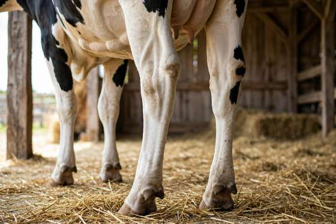
Strong bones and straight legs depend on calcium, phosphorus and vitamin D
Trace Minerals
Trace minerals are needed in milligrams per day, but a shortage of any one of them can cause serious disease. The table below summarises their main functions and the classic signs of deficiency.
White muscle disease in calves, retained placenta, weak calves
Cobalt (Co)
Vitamin B12 synthesis by rumen microbes
Poor appetite, weight loss, ill-thrift ("pining")
Iodine (I)
Thyroid hormones, growth and metabolism
Goitre (swollen thyroid), weak or stillborn calves, poor fertility
Iron (Fe)
Haemoglobin, oxygen transport, enzymes
Anaemia — rare in adult cattle; more common in young calves
Zn
Zinc — skin, hooves and immunityZinc is involved in more than 200 enzymes. Deficiency causes rough, scaly skin (parakeratosis), hair loss, cracked hooves, poor wound healing and reduced fertility in both cows and bulls.
Cu
Copper — colour, blood and fertilityCopper gives the coat its colour — deficiency fades black coats to rusty brown and causes pale rings around the eyes. It also causes anaemia, diarrhoea, poor growth and poor conception rates.
Mn
Manganese — bones and reproductionManganese is needed for bone and cartilage development and for normal ovarian function. Deficiency causes weak, deformed legs in calves and silent heats in cows.
Se
Selenium — the antioxidant mineralSelenium works with vitamin E to protect cells from damage. Deficiency causes white muscle disease in calves, retained placenta, metritis and poor fertility. Selenium levels in fodder depend entirely on soil selenium.
Co
Cobalt — the vitamin B12 mineralRumen microbes use cobalt to make vitamin B12. Without it, appetite falls, the animal wastes away despite eating, and the coat becomes rough — a condition known as pining.
I
Iodine — the thyroid mineralIodine is part of the thyroid hormones that control growth and metabolism. Deficiency causes goitre, weak or hairless calves, stillbirths and poor fertility. Iodised salt is a simple preventive measure.
Fe
Iron — the blood mineralIron carries oxygen in the blood. Adult cattle rarely lack iron because forages and soil contain plenty of it — anaemia in adult cattle is more often caused by parasites or chronic disease than by iron deficiency.
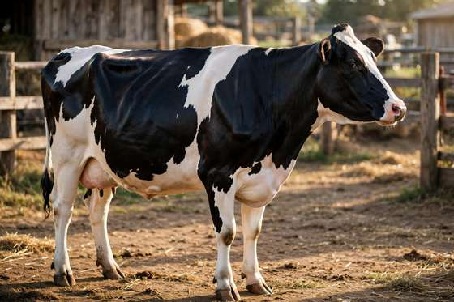
A shiny, smooth coat — a sign of good zinc, copper and overall mineral status
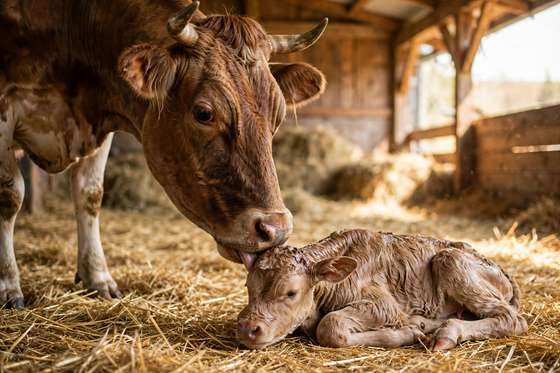
Good mineral nutrition supports fertility, calving and strong calves
Mineral Functions at a Glance
The chart below summarises each mineral's main function and its key deficiency sign — a quick reference for the farm.
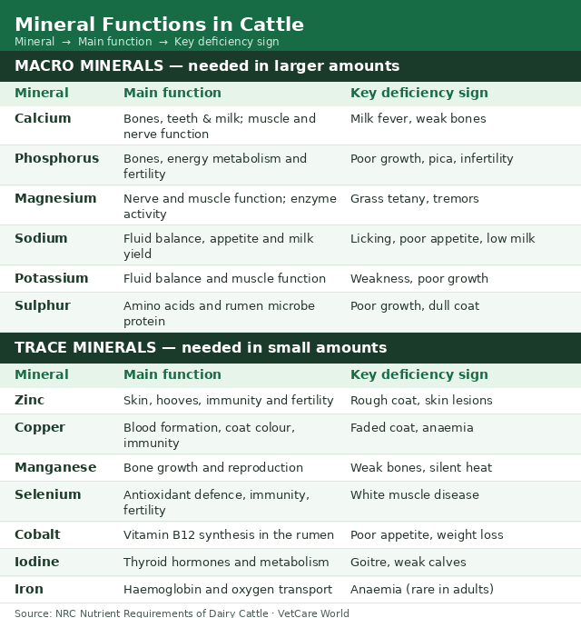
Mineral function chart — macro and trace minerals at a glance
Mineral Deficiency: General Signs and Diagnosis
Mineral deficiencies often develop slowly and look like "poor doing" long before a specific disease appears. Watch for these general warning signs across the herd:
1
Reduced appetite and milk yield(The earliest and most common sign — cows eat less and milk drops)
Rough, dull or faded coat(Zinc and copper deficiency both change the coat)
4
Pica — eating soil, bones, wood or urine(A classic sign of phosphorus or sodium deficiency)
5
Poor fertility — silent heats, repeat breeding, abortions(Phosphorus, copper, selenium, manganese and iodine all affect reproduction)
6
Weak calves, stillbirths and retained placenta(Selenium, iodine and calcium are commonly involved)
7
Low immunity — frequent mastitis, metritis and infections(Zinc, copper and selenium support the immune system)
Diagnosis: signs alone are not enough, because many deficiencies look alike and other diseases cause the same signs. A proper diagnosis combines the herd history, clinical examination, feed and forage analysis, and laboratory testing — blood samples for calcium, phosphorus and magnesium, and liver samples for stored copper and selenium. Soil and water testing may also help, since fodder mineral content depends on the soil. A veterinarian should interpret the results before any supplementation programme is changed.
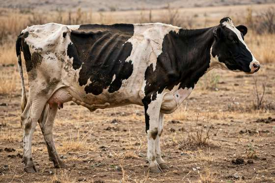
Mineral deficiency — thin body, rough dull coat, poor condition
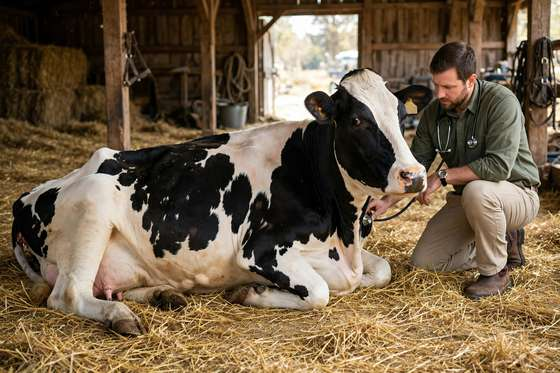
Milk fever — a cow down after calving from low blood calcium. Call a veterinarian at once
More is not better. Minerals are needed in small, balanced amounts, and excess can be just as harmful as deficiency — sometimes more so.
Copper: accumulates in the liver; excess over a long period can cause sudden, fatal copper poisoning, especially when molybdenum is low.
Selenium: the margin between requirement and toxicity is narrow. Chronic excess causes alkali disease — hair loss, cracked hooves and lameness.
Fluorine: excess from rock phosphate or contaminated water causes dental and skeletal fluorosis — stained, worn teeth and stiff, painful joints.
Sulphur: very high sulphur (from water, distillers grains or brassicas) can cause polioencephalomalacia (PEM) — blindness, head-pressing and nervous signs.
Salt (sodium): excess salt is dangerous only when water is restricted — always provide clean drinking water at all times.
Important: never mix two mineral supplements together, and never exceed the dose on the product label, unless a veterinarian advises it. Toxicity is usually caused by combining several mineral sources — for example a mineral mixture plus a fortified concentrate plus a medicated block — without checking the total intake.
Mineral Interactions: Why Balance Matters
Minerals do not work alone — they interact in the rumen and the body. Getting the balance right matters as much as getting the amounts right.
1
Copper – molybdenum – sulphur antagonism(The most important interaction in cattle nutrition. Molybdenum and sulphur combine in the rumen to form thiomolybdates, which bind copper and block its absorption. A diet that looks adequate in copper can still cause copper deficiency if molybdenum or sulphur is high — this is called secondary copper deficiency.)
2
Calcium – phosphorus ratio(Keep the dietary Ca:P ratio at roughly 2:1. Too much phosphorus relative to calcium interferes with calcium absorption and can contribute to urinary calculi in male animals.)
3
Zinc – copper antagonism(Very high zinc intakes reduce copper absorption. Supplementing one trace mineral in excess can create a deficiency of another.)
4
Iron – copper and zinc(High iron in soil-contaminated fodder or drinking water reduces copper and zinc absorption — a common hidden cause of copper deficiency on some farms.)
5
Selenium – vitamin E(Selenium and vitamin E work together as antioxidants. A deficiency of one makes the other more important, and supplementation works best when both are adequate.)
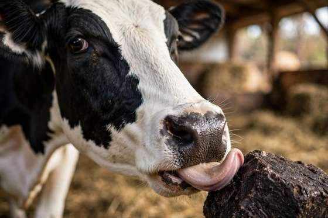
Free-choice licking lets cows take what they need — but intake varies between animals
Supplementation Methods
There are several ways to supply minerals. The best method depends on the farm system, the animals and the minerals needed.
1
Mineral mixture in feed(The most reliable method — a measured amount mixed into the concentrate or TMR every day, so every animal gets its share)
2
Free-choice loose mineral(Mineral powder offered in a sheltered trough; cows eat what they need, but intake varies and shy animals may miss out)
3
Salt licks and mineral blocks(Convenient and long-lasting, but intake depends on licking behaviour — plain salt blocks supply only sodium and chloride)
4
Slow-release boluses(A bolus placed in the rumen releases trace minerals slowly over weeks or months — useful for grazing herds; given by a veterinarian)
5
Injectable minerals(Used for rapid correction of a diagnosed deficiency — only as prescribed by a veterinarian)
6
Mineral-fortified concentrates and TMR(Many commercial concentrates already contain minerals — check the label before adding more, to avoid double dosing)
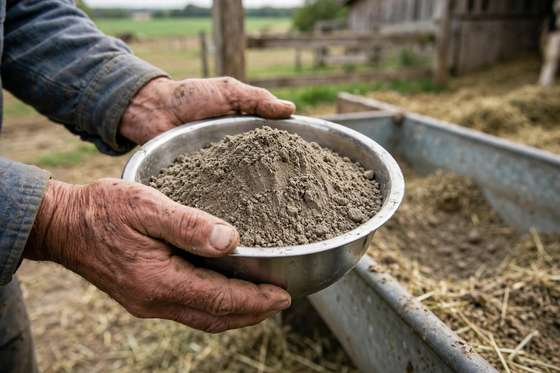
Mineral mixture — mixed into the daily concentrate for reliable intake
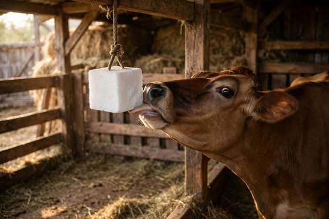
A salt lick supplies sodium and chloride — but not the full mineral range
Practical Recommendations for Pakistani Dairy Farms
Pakistani dairy rations are usually based on wheat straw, green fodder (berseem, maize, sorghum) and concentrate — a combination that is often short of phosphorus, copper, zinc and selenium. These practical steps help:
1
Give a good mineral mixture every day(A common recommendation is about 50–100 g per adult cow per day, mixed into the concentrate — always follow the product label and your veterinarian's advice)
2
Use an area-specific mineral mixture when available(Mineral needs vary by region and soil — a mixture made for your area matches local deficiencies better)
3
Always provide common salt separately(Salt licks or loose salt, plus clean drinking water at all times — especially in summer)
4
Pay special attention to dry and freshly calved cows(Correct calcium, phosphorus and magnesium balance before calving prevents milk fever and retained placenta)
5
Do not rely on blocks alone for high-yielding cows(Licking intake is too variable — milking cows need their minerals measured into the feed)
6
Store minerals dry, cool and away from sunlight(Damp mineral mixture cakes, loses quality and may be refused by the animals)
7
Test your fodder and water when problems persist(Repeated infertility, weak calves or poor growth despite feeding minerals suggests a hidden interaction — ask your veterinarian about feed, blood or liver testing)
Mixing mineral powder into the daily feed — the most reliable method
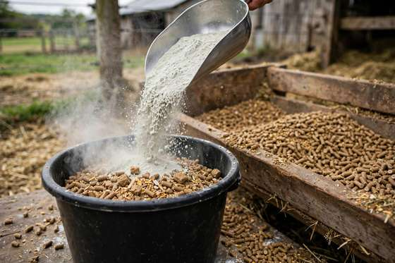
Measure the dose — never guess, and never mix two supplements together
Conclusion
Minerals are small in quantity but huge in effect. Calcium and phosphorus build bone and milk, magnesium protects against tetany, and trace minerals — zinc, copper, selenium and the rest — drive immunity, fertility and growth. Deficiency is common, develops slowly and costs the farmer in milk, fertility and calf health long before it causes obvious disease. A daily mineral mixture, matched to the ration and the animals' needs, is one of the cheapest and most effective investments on a dairy farm. When in doubt, test the feed and the animals — and ask your veterinarian before changing the supplementation programme.
References
National Research Council (NRC) – Nutrient Requirements of Dairy Cattle, 8th revised edition (2021), National Academies Press.
Merck Veterinary Manual – Mineral Deficiency and Toxicity in Cattle.
FAO – Mineral Nutrition of Livestock and Feed Resources.
University of Florida, IFAS Extension – Minerals for Dairy Cattle.
Penn State Extension – Minerals for Dairy Cattle.
Underwood, E. J. & Suttle, N. F. – The Mineral Nutrition of Livestock, 3rd edition, CABI Publishing.
Frequently Asked Questions
What is the difference between macro minerals and trace minerals in cattle?
Macro minerals — calcium, phosphorus, magnesium, sodium, potassium and sulphur — are needed in relatively large amounts, usually measured in grams per day or as a percentage of the diet. Trace minerals — zinc, copper, manganese, selenium, cobalt, iodine and iron — are needed in much smaller amounts, measured in milligrams per day or parts per million of the diet. Both groups are essential: a deficiency of even one trace mineral can reduce growth, milk yield, fertility and immunity.
What are the signs of mineral deficiency in dairy cattle?
General signs include poor appetite, reduced milk yield, slow growth, weight loss, a rough dull coat, and pica — licking or eating soil, bones, wood or urine. Specific deficiencies cause specific signs: calcium deficiency causes milk fever around calving, copper deficiency fades the coat colour, zinc deficiency causes skin lesions, and selenium deficiency causes retained placenta and weak calves. Because many deficiencies look alike, diagnosis should be confirmed by feed analysis and blood or liver testing.
Why is calcium so important around calving, and what is milk fever?
At calving, a cow suddenly needs large amounts of calcium for colostrum and milk. If blood calcium falls too fast, the cow develops milk fever (parturient paresis) — she becomes weak, lies down and cannot rise, and may die without treatment. Prevention focuses on correct calcium, phosphorus and magnesium balance in the dry-cow ration and on good transition-cow management. Treatment must be given by a veterinarian.
How does excess molybdenum or sulphur cause copper deficiency in cattle?
Molybdenum and sulphur interact with copper in the rumen to form compounds called thiomolybdates, which bind copper and prevent its absorption. A diet that looks adequate in copper can therefore still cause copper deficiency if molybdenum or sulphur levels are high. This is called secondary or conditioned copper deficiency, and it is diagnosed by checking copper, molybdenum and sulphur levels in the feed, blood and liver together.
How is mineral deficiency diagnosed in a herd?
Diagnosis combines the herd history, clinical signs, feed and forage analysis, and laboratory testing. Blood samples show the current status of minerals such as calcium, phosphorus and magnesium, while liver samples are the most reliable indicator of stored copper and selenium. Soil and water testing may also help, because mineral levels in fodder depend on the soil. A veterinarian should interpret the results before any supplementation programme is changed.
How much mineral mixture should I give my cow every day?
A common recommendation for an adult dairy cow is about 50 to 100 grams of a good-quality mineral mixture per day, mixed into the concentrate feed — always follow the product label and your veterinarian's advice, because the right amount depends on milk yield, body weight and the rest of the diet. Give it every day, not once in a while, and keep the mineral mixture dry and fresh.
Can I just give a salt lick instead of a mineral mixture?
No. A plain salt lick only supplies sodium and chloride, while a mineral mixture supplies calcium, phosphorus, zinc, copper, selenium and other minerals the cow needs. Salt licks are useful as an extra source of salt, but they cannot replace a proper mineral mixture — especially for milking cows, pregnant cows and growing calves.
گائے بھینس کو منرلز (معدنیات) کیوں ضروری ہیں؟
منرلز گائے بھینس کی صحت، دودھ، افزائش نسل اور قوت مدافعت کے لیے بہت ضروری ہیں۔ کیلشیم ہڈیوں اور دودھ کے لیے، فاسفورس افزائش نسل کے لیے، زنک جلد اور کھروں کے لیے اور سیلینیم قوت مدافعت کے لیے ضروری ہے۔ منرلز کی کمی سے دودھ کم ہو جاتا ہے، جانور کمزور ہو جاتا ہے اور بچہ دینے میں مشکلات ہوتی ہیں۔ روزانہ اچھی منرل مکسچر دینا دودھ اور صحت دونوں کے لیے فائدہ مند ہے۔
Key Takeaway
Minerals are essential in small amounts: macro minerals (calcium, phosphorus, magnesium, sodium, potassium, sulphur) and trace minerals (zinc, copper, manganese, selenium, cobalt, iodine, iron) together control bone, milk, fertility and immunity. Feed a good mineral mixture daily, keep salt and clean water available, watch for deficiency signs, and never exceed label doses. Follow current local veterinary authority guidance and feed supplier instructions.